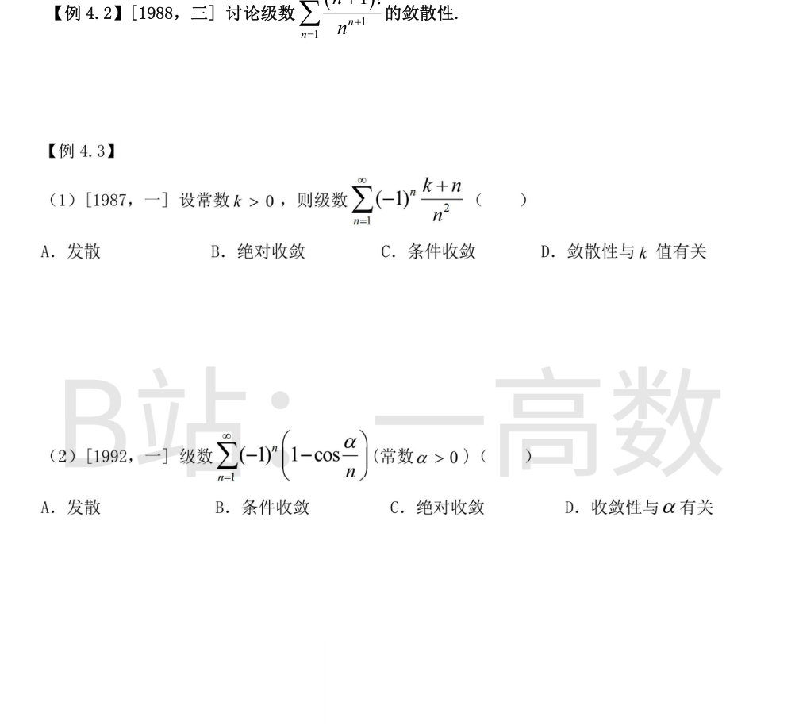
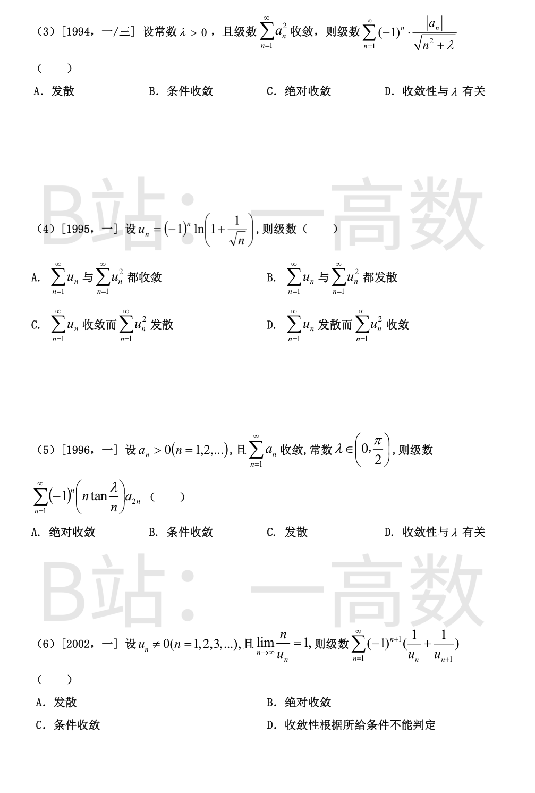
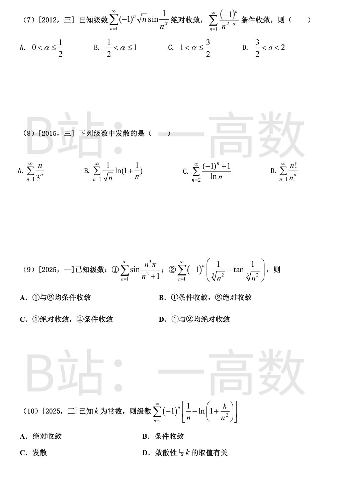
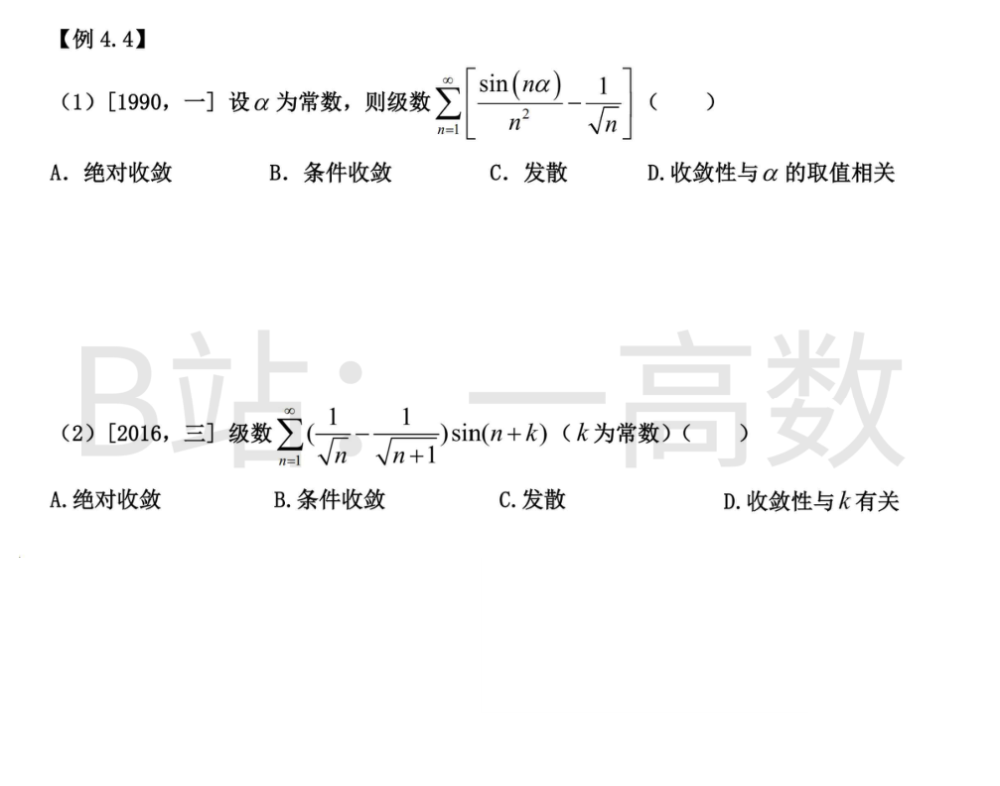
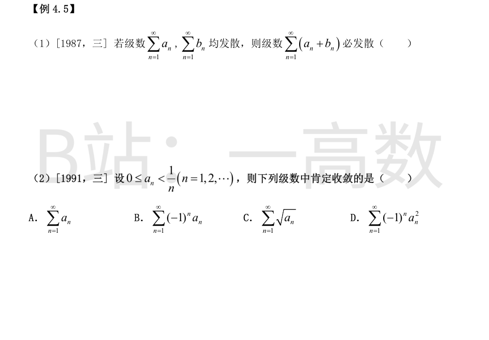
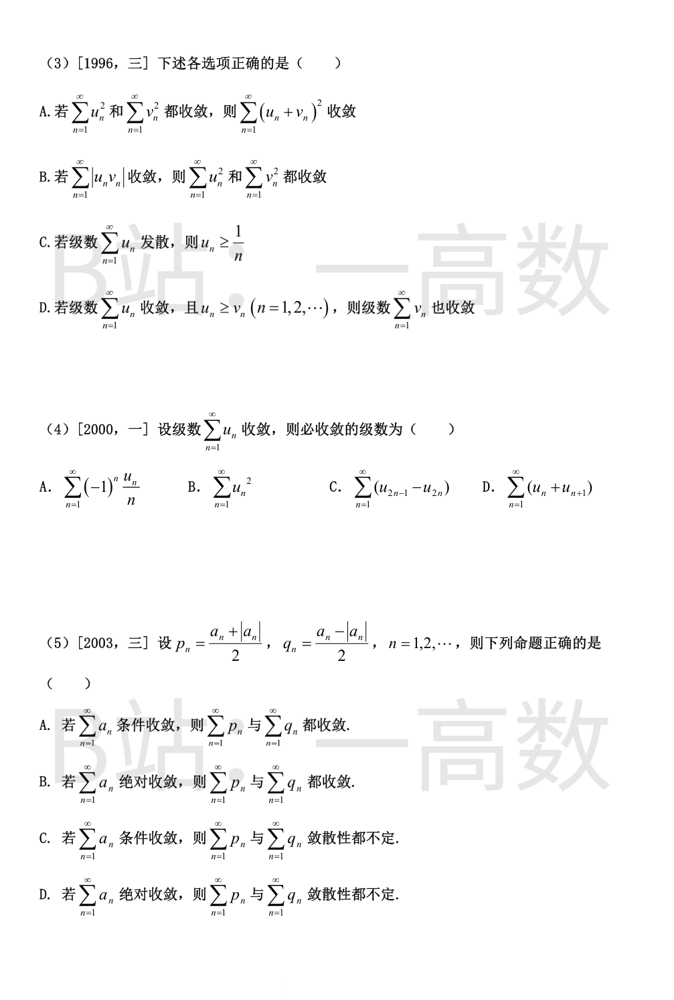
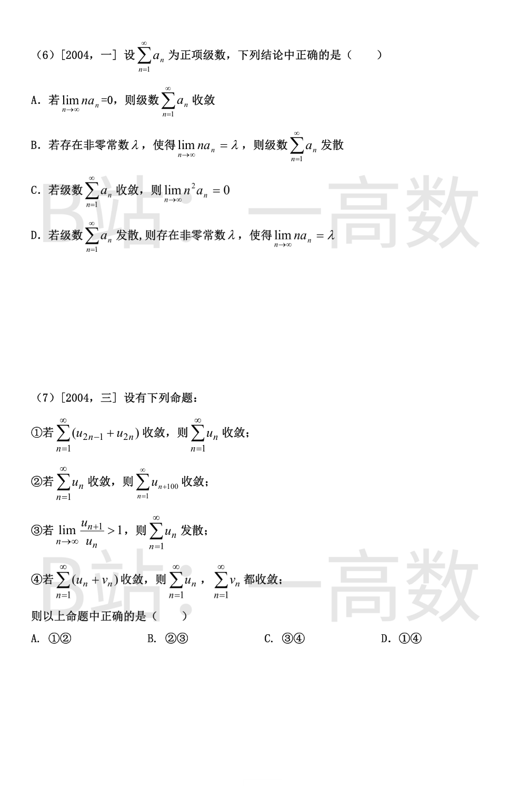
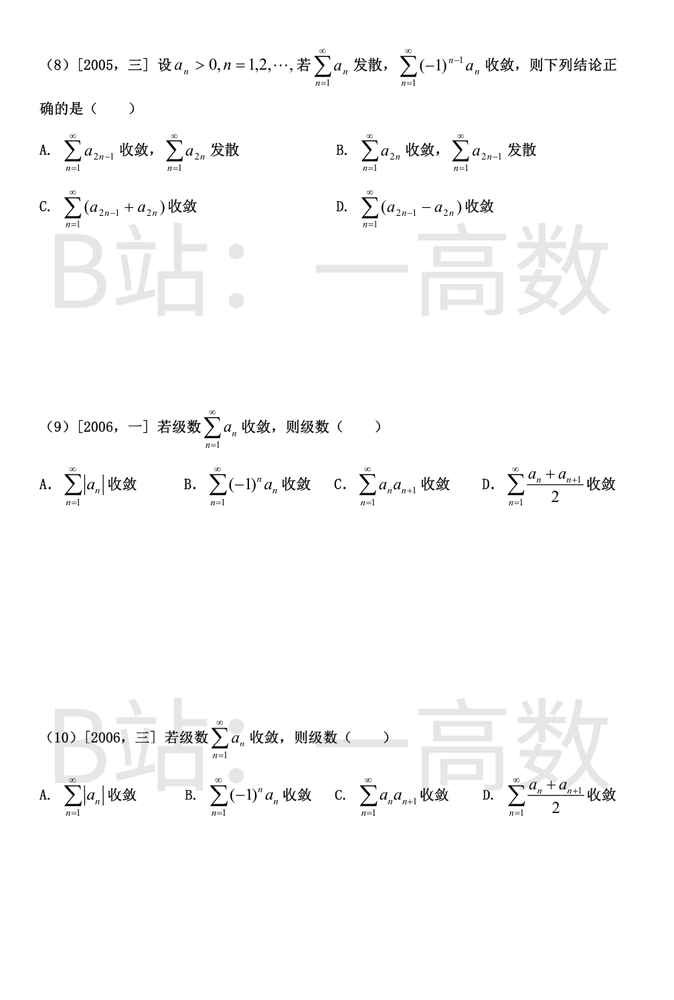
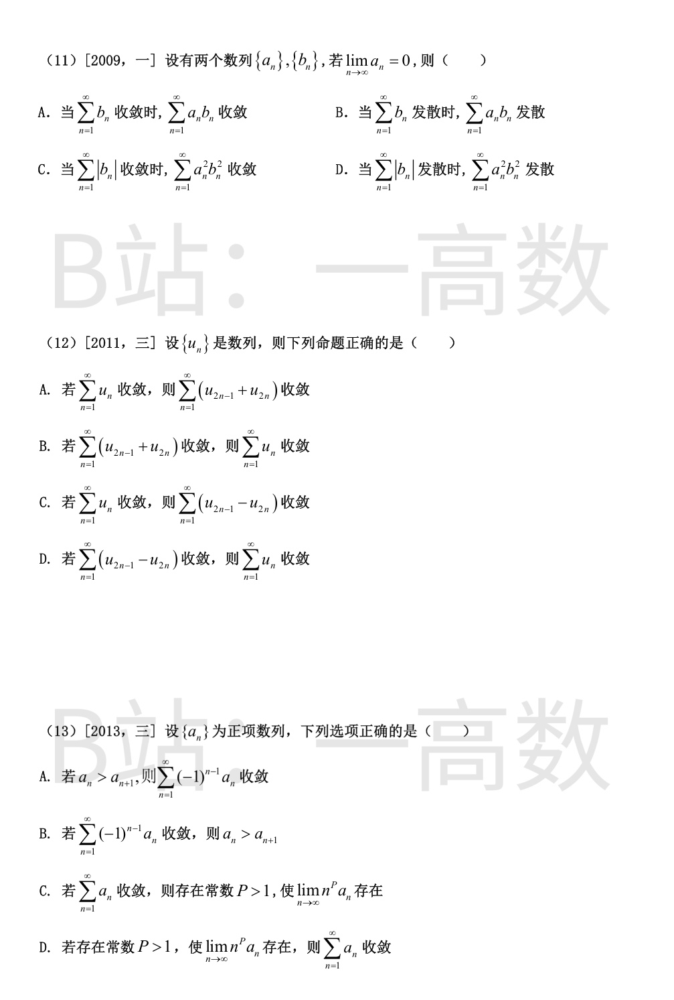
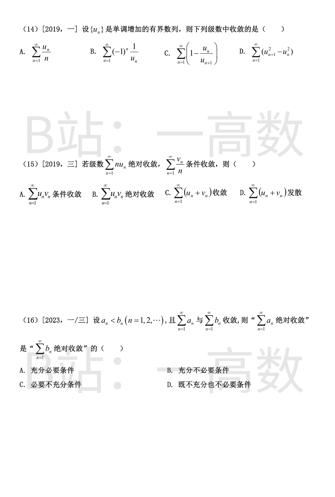

设 $a_n=\frac{(n+1)!}{n^{n+1}}>0$。用比值判别法：$$\frac{a_{n+1}}{a_n}=\frac{(n+2)!}{(n+1)^{n+2}}\cdot\frac{n^{n+1}}{(n+1)!}=\frac{(n+2)}{(n+1)^{n+2}}\cdot n^{n+1}=\frac{n(n+2)}{(n+1)^2}\cdot\left(\frac{n}{n+1}\right)^{n},$$其中 $$\lim_{n\to\infty}\frac{n(n+2)}{(n+1)^2}=1,\qquad \lim_{n\to\infty}\left(1-\frac{1}{n+1}\right)^{n}=\frac{1}{e},$$故 $\lim_{n\to\infty}\frac{a_{n+1}}{a_n}=\frac{1}{e}<1$，由比值判别法，级数收敛。
绝对值级数：$$\left|(-1)^n\frac{k+n}{n^2}\right|=\frac{1}{n}+\frac{k}{n^2},$$其中 $\sum\frac{1}{n}$ 发散，故取绝对值后发散。又 $u_n=\frac{k+n}{n^2}=\frac{1}{n}+\frac{k}{n^2}$ 满足 $$u_n-u_{n+1}=\frac{1}{n(n+1)}+\frac{k(2n+1)}{n^2(n+1)^2}>0,$$即 $u_n$ 单调递减且 $u_n\to 0$，由莱布尼茨判别法原级数收敛。故条件收敛，选 C。
$$0\le 1-\cos\frac{\alpha}{n}=2\sin^2\frac{\alpha}{2n},\qquad 1-\cos\frac{\alpha}{n}\sim\frac{\alpha^2}{2n^2}\ (n\to\infty).$$由于 $\sum\frac{\alpha^2}{2n^2}$ 收敛，由比较判别法 $\sum\left|(-1)^n\left(1-\cos\frac{\alpha}{n}\right)\right|$ 收敛，故级数绝对收敛（与 α 的具体值无关），选 C。
由 $2xy\le x^2+y^2$ 得 $$0\le\frac{|a_n|}{\sqrt{n^2+\lambda}}\le\frac{1}{2}\left(a_n^2+\frac{1}{n^2+\lambda}\right)\le\frac{1}{2}\left(a_n^2+\frac{1}{n^2}\right).$$由题设 $\sum a_n^2$ 收敛，又 $\sum\frac{1}{n^2}$ 收敛，由比较判别法 $\sum\frac{|a_n|}{\sqrt{n^2+\lambda}}$ 收敛，故级数绝对收敛（与 λ 无关），选 C。
① $\sum u_n$：$\ln\left(1+\frac{1}{\sqrt{n}}\right)$ 单调递减且趋于 0，由莱布尼茨判别法收敛；又 $|u_n|=\ln\left(1+\frac{1}{\sqrt{n}}\right)\sim\frac{1}{\sqrt{n}}$，$\sum\frac{1}{\sqrt{n}}$ 发散，故条件收敛。② $\sum u_n^2$：$u_n^2=\ln^2\left(1+\frac{1}{\sqrt{n}}\right)\sim\frac{1}{n}$，$\sum\frac{1}{n}$ 发散，故发散。综上选 C。
因 $\lim_{n\to\infty}n\tan\frac{\lambda}{n}=\lambda\in(0,+\infty)$，故存在 N 与常数 C>0（如 C=2λ），当 n>N 时 $0<n\tan\frac{\lambda}{n}\le C$。于是 $$0<\left(n\tan\frac{\lambda}{n}\right)a_{2n}\le C\,a_{2n}.$$收敛正项级数的子级数仍收敛（部分和有界），故 $\sum a_{2n}$ 收敛；由比较判别法，原级数绝对收敛（与 λ 无关），选 A。
由 $\lim\frac{n}{u_n}=1$ 知 $u_n\sim n\to+\infty$，且 n 充分大时 $u_n>0$、$\frac{1}{u_n}\sim\frac{1}{n}$。部分和裂项相消：$$S_N=\sum_{n=1}^{N}(-1)^{n+1}\left(\frac{1}{u_n}+\frac{1}{u_{n+1}}\right)=\frac{1}{u_1}+(-1)^{N+1}\frac{1}{u_{N+1}}\longrightarrow\frac{1}{u_1},$$故原级数收敛。而 n 充分大时 $\left|\frac{1}{u_n}+\frac{1}{u_{n+1}}\right|=\frac{1}{u_n}+\frac{1}{u_{n+1}}\sim\frac{2}{n}$，$\sum\frac{2}{n}$ 发散，故不绝对收敛。条件收敛，选 C。
n→∞ 时 $\sqrt{n}\sin\frac{1}{n^{\alpha}}\sim n^{\frac{1}{2}-\alpha}$（α>0），故 $\sum\left|(-1)^n\sqrt{n}\sin\frac{1}{n^{\alpha}}\right|$ 与 $\sum n^{\frac{1}{2}-\alpha}$ 同敛散，收敛 $\iff \frac{1}{2}-\alpha<-1\iff \alpha>\frac{3}{2}$。对 $\sum\frac{(-1)^n}{n^{2-\alpha}}$：莱布尼茨收敛 $\iff 2-\alpha>0$；绝对收敛 $\iff 2-\alpha>1$；故条件收敛 $\iff 0<2-\alpha\le 1\iff 1\le\alpha<2$。取交集得 $\frac{3}{2}<\alpha<2$，选 D。
A：$\lim\frac{u_{n+1}}{u_n}=\lim\frac{n+1}{3n}=\frac{1}{3}<1$，收敛。B：$\frac{1}{\sqrt{n}}\ln\left(1+\frac{1}{n}\right)\sim\frac{1}{n^{3/2}}$，收敛。C：通项 $u_n=\frac{(-1)^n+1}{\ln n}$ 的奇数项为 0，偶数项为 $\frac{2}{\ln n}$；偶子级数 $\sum_m\frac{2}{\ln(2m)}$ 中由 $\ln(2m)\le 2m$ 得 $\frac{2}{\ln(2m)}\ge\frac{1}{m}$，而 $\sum\frac{1}{m}$ 发散，故偶子级数发散，原级数发散。D：$\lim\frac{u_{n+1}}{u_n}=\lim\left(\frac{n}{n+1}\right)^{n}=\frac{1}{e}<1$，收敛。选 C。
① $\frac{n^3\pi}{n^2+1}=n\pi-\frac{n\pi}{n^2+1}$，故 $$\sin\frac{n^3\pi}{n^2+1}=(-1)^{n+1}\sin\frac{n\pi}{n^2+1}.$$其中 $\sin\frac{n\pi}{n^2+1}\sim\frac{\pi}{n}\to 0$ 且 n≥2 后单调递减（$\frac{x}{x^2+1}$ 在 x>1 递减），莱布尼茨判别法知收敛；取绝对值后 $\sim\frac{\pi}{n}$，$\sum\frac{\pi}{n}$ 发散，故①条件收敛。② 记 $x=n^{-2/3}\to 0$：$x-\tan x=x-\left(x+\frac{x^3}{3}+O(x^5)\right)=-\frac{x^3}{3}+O(x^5)$，故 $$\left|(-1)^n\left(\frac{1}{\sqrt[3]{n^2}}-\tan\frac{1}{\sqrt[3]{n^2}}\right)\right|\sim\frac{1}{3n^2},$$$\sum\frac{1}{3n^2}$ 收敛，②绝对收敛。选 B。
记 $b_n=\frac{1}{n}-\ln\left(1+\frac{k}{n^2}\right)=\frac{1}{n}-\frac{k}{n^2}+O\left(\frac{1}{n^4}\right)$。n 充分大时 $b_n>0$ 且 $b_n\sim\frac{1}{n}\to 0$；又 $$b_n-b_{n+1}=\frac{n(n+1)-k(2n+1)}{n^2(n+1)^2}+O\left(\frac{1}{n^5}\right)>0\quad(n\text{ 充分大}),$$即 $b_n$ 最终单调递减，由莱布尼茨判别法原级数收敛。而 $\sum|b_n|$ 与 $\sum\frac{1}{n}$ 同敛散（发散），故条件收敛，结论与常数 k 无关，选 B。
$\left|\frac{\sin(n\alpha)}{n^2}\right|\le\frac{1}{n^2}$，故 $\sum\frac{\sin(n\alpha)}{n^2}$ 绝对收敛。若原级数收敛，则 $$\sum_{n=1}^{\infty}\frac{1}{\sqrt{n}}=\sum_{n=1}^{\infty}\frac{\sin(n\alpha)}{n^2}-\sum_{n=1}^{\infty}\left[\frac{\sin(n\alpha)}{n^2}-\frac{1}{\sqrt{n}}\right]$$作为两个收敛级数之差也应收敛，与 $p=\frac{1}{2}$ 的 p-级数发散矛盾。故原级数发散，选 C。
$$a_n=\frac{1}{\sqrt{n}}-\frac{1}{\sqrt{n+1}}=\frac{\sqrt{n+1}-\sqrt{n}}{\sqrt{n}\sqrt{n+1}}=\frac{1}{\sqrt{n}\sqrt{n+1}\left(\sqrt{n}+\sqrt{n+1}\right)}\sim\frac{1}{2n^{3/2}}>0.$$对任意常数 k，$$\left|\left(\frac{1}{\sqrt{n}}-\frac{1}{\sqrt{n+1}}\right)\sin(n+k)\right|\le a_n\le\frac{C}{n^{3/2}},$$$\sum\frac{1}{n^{3/2}}$ 收敛，由比较判别法级数绝对收敛，且与 k 无关，选 A。






原图为判断题（未印选项）。反例：取 $a_n=(-1)^n$，$b_n=(-1)^{n+1}$，则 $\sum a_n$、$\sum b_n$ 的通项都不趋于 0，均发散；但 $a_n+b_n=0$，$\sum(a_n+b_n)$ 收敛（和为 0）。故"必发散"的断言错误。
D 对：$0\le a_n^2<\frac{1}{n^2}$，$\sum\frac{1}{n^2}$ 收敛，由比较判别法 $\sum a_n^2$ 收敛，故 $\sum(-1)^n a_n^2$ 绝对收敛，肯定收敛。A 不一定：$a_n=\frac{1}{2n}$ 满足条件，但 $\sum a_n$ 发散。B 不一定：$a_n=\frac{1+(-1)^n}{4n}$（奇数项为 0、偶数项为 $\frac{1}{2n}$），则 $(-1)^n a_n$ 的偶数项构成 $\sum\frac{1}{4m}$，发散。C 不一定：$a_n=\frac{1}{4n}$ 时 $\sqrt{a_n}=\frac{1}{2\sqrt{n}}$，$\sum\frac{1}{2\sqrt{n}}$ 发散。选 D。
A 对：$(u_n+v_n)^2=u_n^2+2u_nv_n+v_n^2\le 2u_n^2+2v_n^2$，由比较判别法 $\sum(u_n+v_n)^2$ 收敛。B 错：取 $u_n=\frac{1}{\sqrt{n}}$，$v_n=\frac{1}{n^{3/2}}$，$\sum|u_nv_n|=\sum\frac{1}{n^2}$ 收敛，但 $\sum u_n^2=\sum\frac{1}{n}$ 发散。C 错：$u_n=\frac{1}{2n}$ 时 $\sum u_n$ 发散，但 $u_n<\frac{1}{n}$。D 错：比较判别法要求正项（同号），取 $u_n\equiv 0$（收敛）、$v_n=-1$（发散），满足 $u_n\ge v_n$ 但 $\sum v_n$ 发散。选 A。
D 对：收敛级数的奇、偶子级数 $\sum u_{2n+1}$、$\sum u_{2n}$ 都收敛（其部分和是原部分和数列的子列），故 $\sum(u_{2n}+u_{2n+1})=\sum u_{2n}+\sum u_{2n+1}$ 收敛。A 错：$u_n=\frac{(-1)^n}{\ln n}$（n≥2，莱布尼茨收敛），则 $(-1)^n\frac{u_n}{n}=\frac{1}{n\ln n}$，而 $\sum\frac{1}{n\ln n}$ 发散。B 错：$u_n=\frac{(-1)^n}{\sqrt{n}}$，$u_n^2=\frac{1}{n}$ 发散。C 错：$u_n=\frac{(-1)^{n-1}}{n}$，则 $u_{2n-1}-u_{2n}=\frac{1}{2n-1}+\frac{1}{2n}\sim\frac{1}{n}$，发散。选 D。
$p_n=\max(a_n,0)\ge 0$，$q_n=\min(a_n,0)\le 0$，$p_n+q_n=a_n$，且 $0\le p_n\le|a_n|$，$0\le|q_n|\le|a_n|$。若 $\sum a_n$ 绝对收敛：由比较判别法 $\sum p_n$、$\sum|q_n|$ 都收敛，故 $\sum p_n$ 与 $\sum q_n$ 都收敛，B 对。若 $\sum a_n$ 条件收敛：$\sum p_n=\frac{1}{2}\sum(a_n+|a_n|)$，其中 $\sum|a_n|$ 发散而 $\sum a_n$ 收敛，故 $\sum p_n$ 发散（A、C 错）；D 与 B 矛盾，错。选 B。
B 对：$\lim n a_n=\lambda\ne 0$，则 $\frac{a_n}{1/n}\to\lambda\ne 0$，由极限比较法 $\sum a_n$ 与调和级数同敛散，发散。A 错：$a_n=\frac{1}{n\ln n}$（n≥2）时 $n a_n=\frac{1}{\ln n}\to 0$，但 $\sum\frac{1}{n\ln n}$ 发散。C 错：取 $a_{2^k}=\frac{1}{2^k}$、其余 $a_n=\frac{1}{n^2}$，$\sum a_n$ 收敛，但 $n^2 a_n$ 沿 $n=2^k$ 趋于 $+\infty$，不趋于 0。D 错：$a_n=\frac{1}{\ln n}$ 时 $\sum a_n$ 发散，但 $n a_n\to+\infty$，不存在有限非零极限。选 B。
① 错：$u_{2n-1}=1$，$u_{2n}=-1$，则 $\sum(u_{2n-1}+u_{2n})=0$ 收敛，但通项 $u_n\not\to 0$，$\sum u_n$ 发散。② 对：$\sum u_{n+100}$ 与 $\sum u_n$ 仅差前 100 项，敛散性相同。③ 对：$\lim\frac{u_{n+1}}{u_n}>1$，则充分大时 $|u_{n+1}|>|u_n|$ 且各项同号，通项不趋于 0，故发散。④ 错：取 $v_n=-u_n$（$u_n$ 为任一发散级数），$\sum(u_n+v_n)=0$ 收敛。正确的是②③，选 B。
记 $O_o(N)=\sum_{k=1}^{N}a_{2k-1}$，$O_e(N)=\sum_{k=1}^{N}a_{2k}$。$\sum(-1)^{n-1}a_n$ 收敛，记其部分和为 $S_N$，则 $S_{2N}=O_o(N)-O_e(N)\to S$，且 $a_{2N+1}=S_{2N+1}-S_{2N}\to 0$。又 $\sum a_n$ 为发散正项级数，$O_o(N)+O_e(N)\to+\infty$。两式相加得 $2O_o(N)\to+\infty$，故 $\sum a_{2n-1}$ 发散；相减得 $2O_e(N)=[O_o(N)+O_e(N)]-S_{2N}\to+\infty$，故 $\sum a_{2n}$ 也发散，A、B 错。C 错：$\sum(a_{2n-1}+a_{2n})$ 是正项级数 $\sum a_n$ 的加括号级数，敛散性不变，发散。D 对：$\sum(a_{2n-1}-a_{2n})$ 的前 N 项部分和恰为 $S_{2N}\to S$，收敛。选 D。
D 对：$\sum\frac{a_n+a_{n+1}}{2}=\frac{1}{2}\sum a_n+\frac{1}{2}\sum a_{n+1}$，而 $\sum a_{n+1}$ 与 $\sum a_n$ 仅差首项，均收敛。A 错：$\sum a_n$ 可以只是条件收敛。B 错：$a_n=\frac{(-1)^n}{\sqrt{n}}$ 时 $\sum a_n$ 收敛，但 $\sum(-1)^n a_n=\sum\frac{1}{\sqrt{n}}$ 发散。C 错：同上例，$a_n a_{n+1}=-\frac{1}{\sqrt{n(n+1)}}\sim-\frac{1}{n}$，发散。选 D。
本题与 (9) 为同一道题（2006 年数一、数三共同考查），选项文字完全相同，答案同为 D，理由：$\sum\frac{a_n+a_{n+1}}{2}=\frac{1}{2}\sum a_n+\frac{1}{2}\sum a_{n+1}$ 收敛；A 只对绝对收敛成立；B、C 的反例为 $a_n=\frac{(-1)^n}{\sqrt{n}}$。
C 对：$\sum|b_n|$ 收敛 $\Rightarrow$ 充分大时 $|b_n|\le 1$；$\lim a_n=0$ $\Rightarrow$ 充分大时 $|a_n|\le 1$。于是 $a_n^2b_n^2\le|b_n|$，由比较判别法 $\sum a_n^2 b_n^2$ 收敛。A 错：$a_n=b_n=\frac{(-1)^n}{\sqrt{n}}$，$\sum b_n$ 收敛，但 $a_n b_n=\frac{1}{n}$ 发散。B 错：$a_n=\frac{1}{n^2}$，$b_n=1$，$\sum b_n$ 发散，但 $\sum a_n b_n=\sum\frac{1}{n^2}$ 收敛。D 错：$a_n=\frac{1}{n}$，$b_n=1$，$\sum|b_n|$ 发散，但 $\sum a_n^2b_n^2=\sum\frac{1}{n^2}$ 收敛。选 C。
A 对：$\sum(u_{2n-1}+u_{2n})$ 的前 N 项部分和恰为 $\sum u_n$ 的前 2N 项部分和 $S_{2N}$，收敛级数的部分和数列收敛，其子列 $\{S_{2N}\}$ 也收敛。B 错：$u_{2n-1}=1$，$u_{2n}=-1$，$\sum(u_{2n-1}+u_{2n})=0$ 收敛，但通项不趋于 0，$\sum u_n$ 发散。C 错：$u_n=\frac{(-1)^{n-1}}{n}$ 收敛，但 $u_{2n-1}-u_{2n}=\frac{1}{2n-1}+\frac{1}{2n}\sim\frac{1}{n}$，发散。D 错：$u_{2n-1}=u_{2n}=1$，$\sum(u_{2n-1}-u_{2n})=0$ 收敛，但 $\sum u_n$ 发散。选 A。
D 对：$\lim n^P a_n=c$ 存在（有限，P>1），则充分大时 $a_n\le\frac{C}{n^P}$，而 $\sum\frac{1}{n^P}$ 收敛（P>1），由比较判别法 $\sum a_n$ 收敛。A 错：$a_n=1+\frac{1}{n}$ 单调递减，但通项 $(-1)^{n-1}a_n\not\to 0$，级数发散。B 错：$a_n=\frac{2+(-1)^n}{n^2}$，则 $a_1=1<a_2=\frac{3}{4}$ 不成立（即 $a_1<a_2$），但 $\sum(-1)^{n-1}a_n$ 绝对收敛。C 错：$a_n=\frac{1}{n\ln^2 n}$（n≥2）收敛，但对任意 P>1，$n^P a_n=\frac{n^{P-1}}{\ln^2 n}\to+\infty$，极限不存在。选 D。
{u_n} 单调增且有界，故收敛，设 $u_n\to L$。D 对：裂项级数 $\sum_{n=1}^{N}(u_{n+1}^2-u_n^2)=u_{N+1}^2-u_1^2\to L^2-u_1^2$，收敛。A 错：$u_n\equiv 1$（单调增有界）时 $\sum\frac{1}{n}$ 发散。B 错：$u_n\equiv 1$ 时 $\sum(-1)^n$ 的通项不趋于 0，发散。C 错：$u_n=-\frac{1}{n}$（单调增有界），$1-\frac{u_n}{u_{n+1}}=1-\frac{n+1}{n}=-\frac{1}{n}$，$\sum\left(-\frac{1}{n}\right)$ 发散。选 D。
由 $\sum n u_n$ 绝对收敛：$\sum|u_n|\le\sum n|u_n|<+\infty$（n≥1），故 $\sum u_n$ 绝对收敛，且 $|u_n|\le n|u_n|$。由 $\sum\frac{v_n}{n}$ 收敛：$\frac{|v_n|}{n}\to 0$，故存在 M 使 $\frac{|v_n|}{n}\le M$。于是 $$|u_nv_n|=|nu_n|\cdot\frac{|v_n|}{n}\le M|nu_n|,$$由比较判别法 $\sum|u_nv_n|$ 收敛，即绝对收敛，B 对。C、D 均不必然：取 $u_n\equiv 0$、$v_n=(-1)^n$，则 $\sum\frac{v_n}{n}=\sum\frac{(-1)^n}{n}$ 条件收敛，而 $\sum(u_n+v_n)=\sum(-1)^n$ 发散；取 $v_n=\frac{(-1)^n}{\ln n}$（n≥2），则 $\sum\frac{v_n}{n}=\sum\frac{(-1)^n}{n\ln n}$ 条件收敛，且 $\sum v_n$ 由莱布尼茨收敛，此时 $\sum(u_n+v_n)$ 收敛。选 B。
记 $c_n=b_n-a_n>0$。因 $\sum a_n$、$\sum b_n$ 都收敛，正项级数 $\sum c_n=\sum b_n-\sum a_n$ 收敛。充分性：$\sum a_n$ 绝对收敛 $\Rightarrow \sum|b_n|=\sum|a_n+c_n|\le\sum|a_n|+\sum c_n<+\infty$ $\Rightarrow \sum b_n$ 绝对收敛。必要性：$\sum b_n$ 绝对收敛 $\Rightarrow \sum|a_n|=\sum|b_n-c_n|\le\sum|b_n|+\sum c_n<+\infty$ $\Rightarrow \sum a_n$ 绝对收敛。两者互为充分必要条件，选 A。